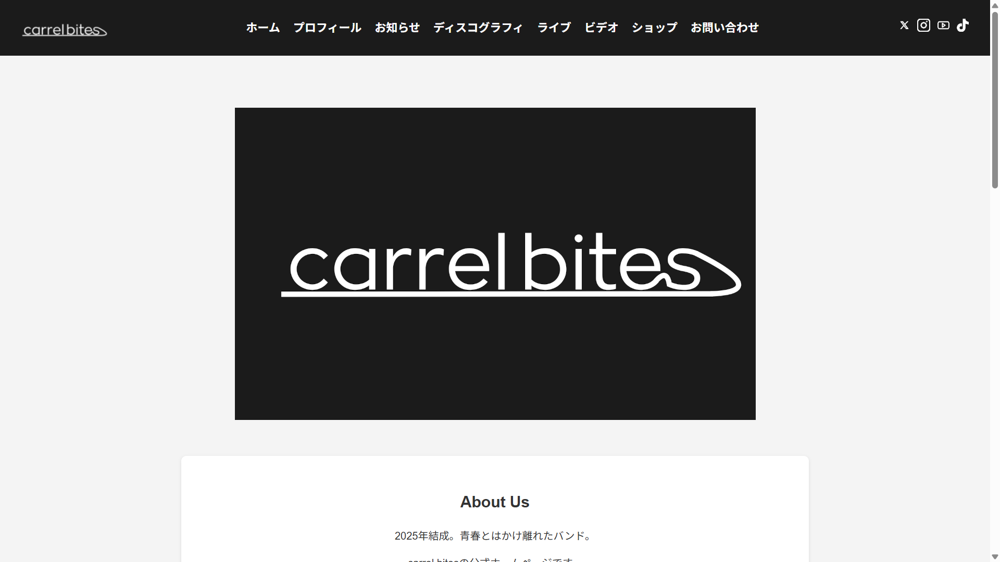
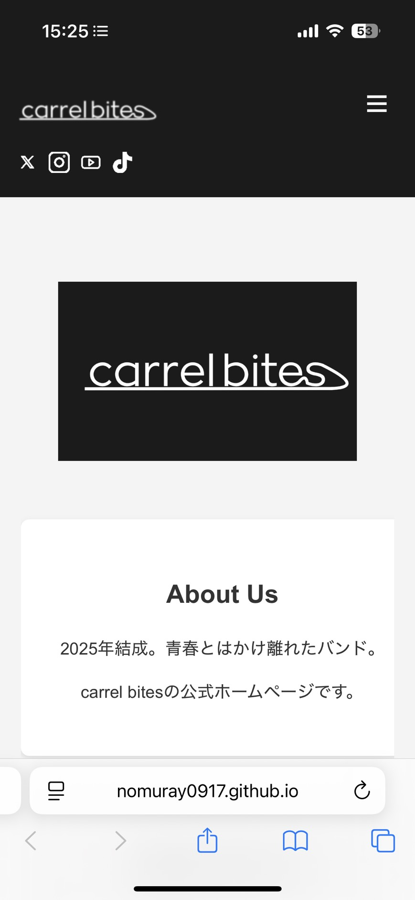

carrel bites 公式Webサイト デザイン・開発


概要:自身の所属するバンドの公式ホームページとして、情報発信とブランディングを目的に制作・運用。ライブ情報、ディスコグラフィ、お問い合わせなど、運用に必要な全ページを設計・実装しました。
技術的アプローチ:モノトーンを基調とし、バンドのコンセプトに合わせたクールでシンプルなUI/UXを設計。HTML/CSS/JSでフルスクラッチでコーディングし、レスポンシブデザインに対応させ、GitHub Pagesにて公開しています。
制作理由:バンドのwebサイトを作るだけで月何千円も取られたり，無料版で広告を入れられるのがムカついたため．
Webサイトリンク ➡️